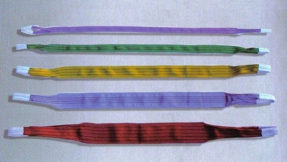

103 PRODOTTI · 12 FAMIGLIE CON SCHEDE
Trova il tuo
punto di forza.
Tessile, acciaio e componenti.
Cerca il nome o il codice, consulta
i dati e costruisci la tua selezione.


Nessun prodotto trovato.
Prova un altro nome o codice, oppure azzera i filtri.